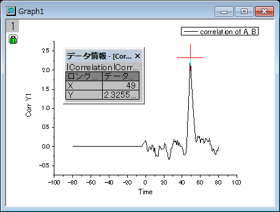
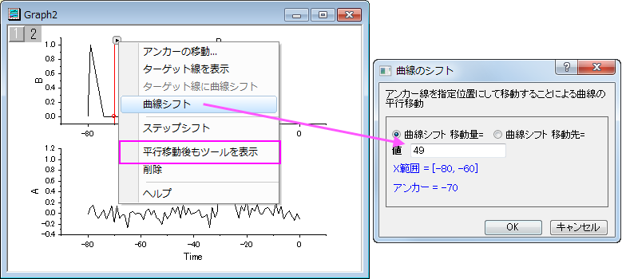

コヒーレンスと相関
Coherence-and-Correlation
概要
コヒーレンスは、2つの信号が似たような周波数成分が含んでいるかどうかテストすることによって、線形依存性の度合いを測定します。2つの信号を周波数で完全に一致していると考えられる場合には、コヒーレンスの大きさは1になります。そうでなく、完全に無関係の場合は0となります。
相関はもうひとつの2つの信号間の関係指標です。相関係数は、相関の強さを評価するために使用されます。計算された相関係数が大きい場合には、2つの信号の類似度は高く、小さな場合は、2つの信号はほとんどまたは全く線形関係がないことを意味しています。
学習する項目
このチュートリアルでは、以下の項目について説明します。
- コヒーレンスを計算し、2つの信号で線形依存の最も高い周波数を見つける
- 相関を計算し、データセットを変換するためのラグを見つける
コヒーレンス
- 新しいワークブックを用意します。
- 新しいワークブックを用意します。ヘルプ: フォルダを開く: サンプルフォルダを選択して、サンプルフォルダを開きます。このフォルダ内のSignal ProcessingサブフォルダにあるCoherence.dat ファイルを探します。空のワークシートにファイルをドラッグアンドドロップしてインポートします。
-
- 列Aを選択し、右クリックしてショートカットメニューから列XY属性の設定：Yを選択します。これにより、列Aの属性をY データとします。
- 2つの列を選択して、解析：信号処理：コヒーレンスを選択します。 コヒーレンス:cohereダイアログを開きます
- ウィンドウ法をWelch に変更し、OKボタンをクリックしてコヒーレンスを計算します。
-
- ワークシートに2列追加されます。これら2つの列を選択し、作図：基本の2Dグラフ：折れ線を選択して結果から周波数に対するコヒーレンスの状況を作図します。
-

- プロット操作・オブジェクト作成ツールバーからデータリーダを選択し、一番髙いピークの値を調べます。上図のように、周波数が0.25の時、一番強いピークが出ることがわかります。そして、このコヒーレンスのピークの大きさは、この周波数で2つの信号が強く対応するということを意味します
1D相関
- 新しいワークブックを用意します。
- メニューのファイル：インポート：単一ASCIIインポートを選択し、<Origin インストールフォルダ>\Samples\Signal Processing\Correlation.datファイルをインポートします。
-
- A列を選択し、右クリックしてコンテキストメニューを開きます。列XY属性の設定：Y列と選択して、この列の属性をY 列にします。
- 2つの列を選択して、解析：信号処理：相関を選択します。 すると、相関:corr1ダイアログボックスが開きます。デフォルト設定のまま使用します。
-
- OKボタンをクリックして2つの信号の相関を計算します。
- ワークシートに、相関の結果が時間差列と共に出力されます。D列を選択し、作図：基本の2Dグラフ：折れ線を選択して結果からグラフを作図します。
- 
- 上図のように、データリーダを使用して強いピークの位置をみると、Time=49であることがわかります。これにより、これら2つの信号を位置合わせするには、2つ目のデータセットを49単位変換する必要があることがわかります。
- ワークシートに戻り、A列とB列を選択します。メニューの作図：複数区分/軸：垂直2区分を選択して2つの信号データから2つのレイヤを持つグラフを作成します。
-
- 上グラフのプロット上でダブルクリックして、作図の詳細（プロット属性）ダイアログを開きます。左パネルで、Layer 2を選択し、右パネルで軸スケール間のリンク対応タブを開きます。そして、X 軸のリンクを直接（1対1）に変更します。
-
- OKボタンをクリックすると、2つのグラフでX軸が同じ値になります。
-

- データセットを移動可能にするために、グラフ内の鍵のアイコン上でクリックし、再計算モード：しないに変更します。確認メッセージが開いたら、OKをクリックして閉じます。
- 上グラフを選択して、メニューから解析：データ操作：水平移動を選択して、レイヤ内に三角形ボタン付きの垂直線を追加します。三角形のボタンをクリックしてコンテキストメニューを開き、平行移動後もツールを表示のチェックを外します。メニューを再度開き、複製して移動：新規の列を選択します。新しい列が2列追加され、曲線のソースデータがコピーされます。
-
- 再度コンテキストメニューを開き、曲線シフトを選択し、ダイアログを開きます。値を49にセットします。
- 
- OK をクリックして、変換します。2つの信号を整列できました。
-